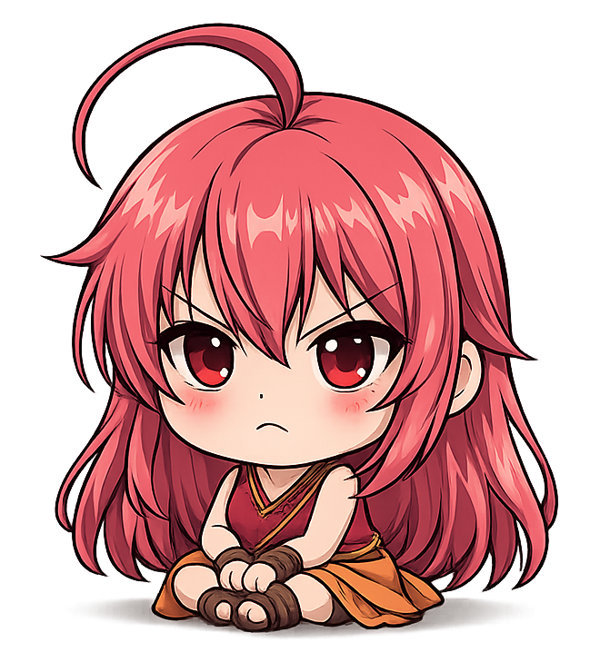

Steniichi Bunko ☆彡
Seleziona un gioco per continuare ↷
Seleziona un gioco per continuare ↷

Studio la lingua giapponese e, per passione, mi dedico alla traduzione di diversi tipi di media. Il mio obiettivo è rendere i contenuti non solo comprensibili, ma anche il più possibile fedeli al significato originale. Ho creato questo sito per raccogliere e condividere tutti i miei lavori, offrendo un punto di riferimento per chi è interessato a traduzioni curate e attente ai dettagli.